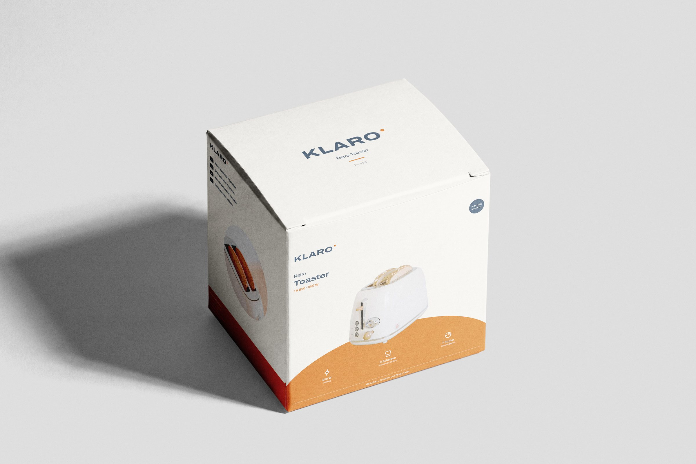
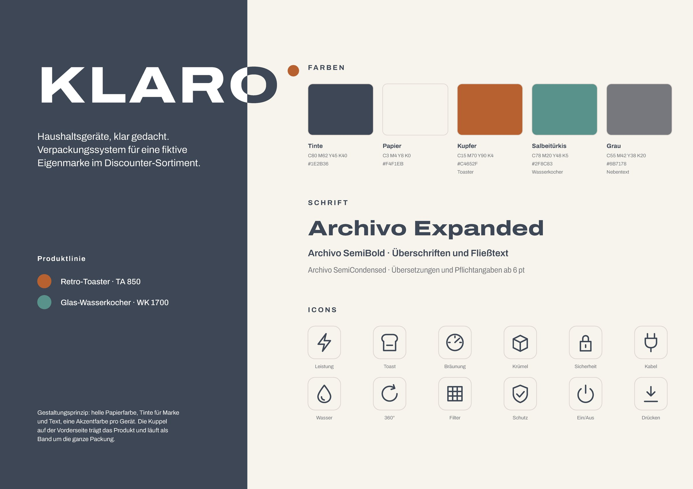
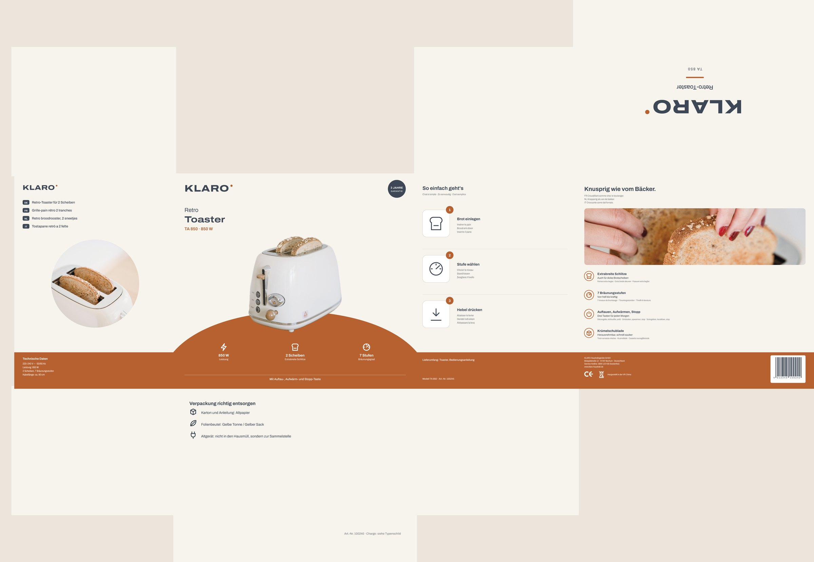
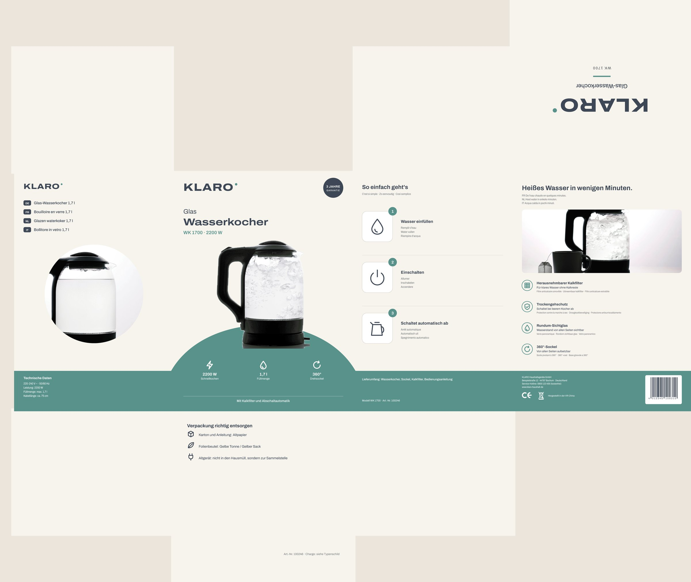
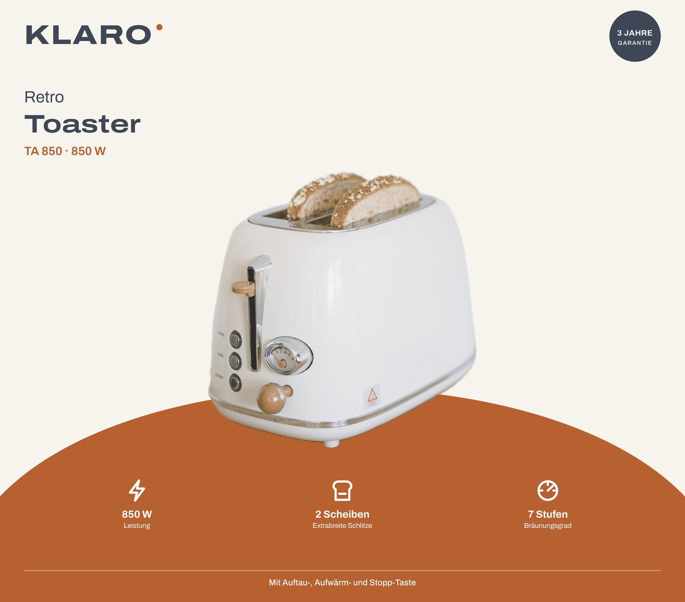
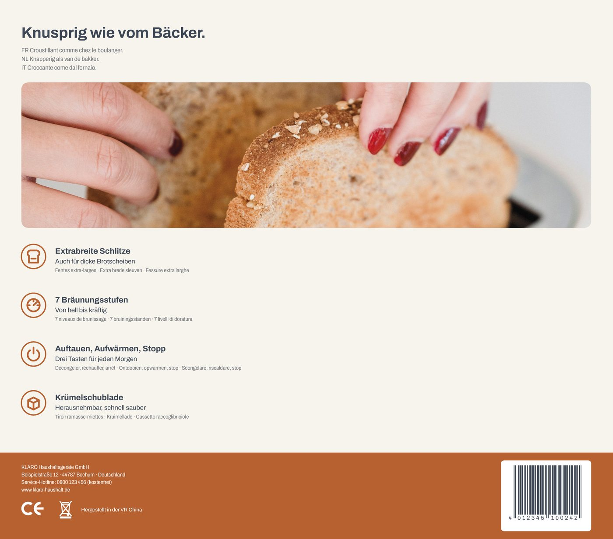
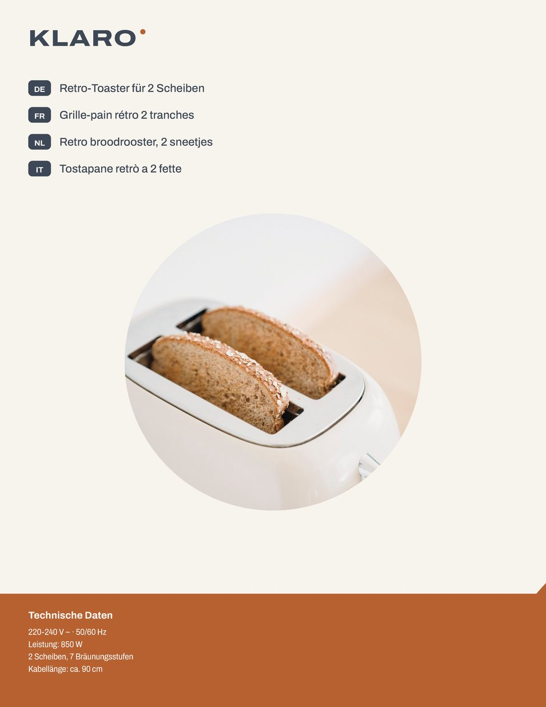
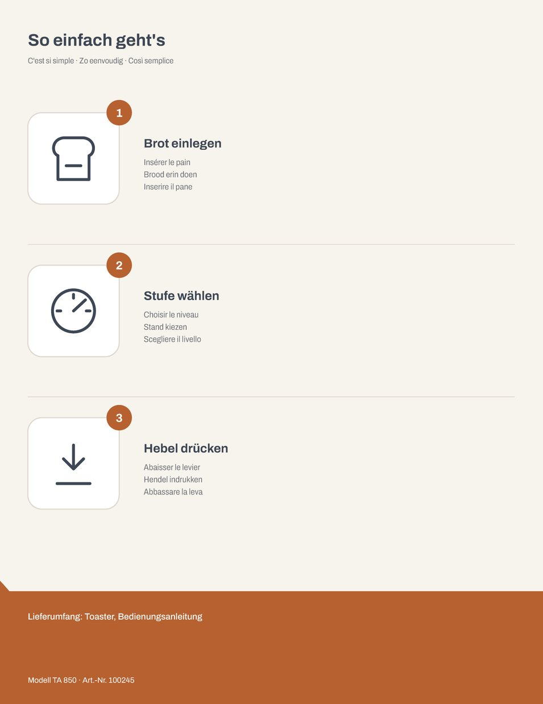

Klaro
- Client
- KLARO kitchen appliances (concept)
- Year
- 2026
- Scope
- Brand, Packaging system, Dielines
A fictional own brand for small kitchen appliances in a discount range. I designed the brand and a packaging system that works for every device in the line: a light paper tone, ink for the brand and the text, and one accent colour per product. The arc on the front carries the product and runs as a band around the whole box. The line starts with two products: the retro toaster TA 850 and the glass kettle WK 1700.

From brand to box
First a small brand system that can grow with the product line, then a dieline where every panel has its own job, then print data with all the details a carton on a shop shelf needs.
Brand system
A wide wordmark in Archivo Expanded with a coloured dot, a calm palette of ink and paper, and one accent per device: copper for the toaster, sage teal for the kettle. The line icons are drawn on one grid, so new products can use the same set.

Dieline
Reverse tuck end cartons built on the cut and crease lines, one for each device. The front sells, the left side names the product in four languages with the technical data, the right side explains it in three steps, the back shows the benefits, and the bottom tells you how to dispose of the packaging.


Panels
The toaster carton panel by panel. Product photo and key facts on the front, a mood photo and four benefits on the back. The sides stay quiet and practical, with French, Dutch and Italian set smaller under the German text.




Print specs
The technical side, prepared the way a print shop needs it.
- Formats
- Reverse tuck end cartons · toaster 250 × 170 × 220 mm · kettle 190 × 170 × 250 mm
- Print data
- 3 mm bleed, cut and crease lines as spot colours on their own layer, layered Illustrator file
- Colours
- Ink #1E2B36 · Paper #F4F1EB · Copper #C4652F · Sage teal #2F8C83, all set up as CMYK swatches
- Typeface
- Archivo Expanded for the wordmark and headlines, Archivo SemiBold for text, Archivo SemiCondensed for translations and legal text from 6 pt
- Legal details
- CE and WEEE symbols, Triman and Info-tri for France, sender, article number and EAN-13 field (example data)
- Photos
- Nicola Barts and Engin Akyurt on Pexels, backgrounds removed and cropped